3 Webropol
Tällä sivulla käydään läpi, miten Webropol-työkalun käyttö toimii. Lisää ohjeita löytyy myös Pelastusopiston intraverkosta.
Webropol on suomalainen kyselytyökalu, jolla voit tuottaa erimuotoisia kyselyjä ja lähettää ne vastaajillesi.
3.1 Webropoliin kirjautuminen
Kirjaudu Webropoliin osoitteessa webropol.fi. Käytä Pelastusopiston tunnuksia päästäksesi sisään, jolloin saat käyttöösi myös opiston omat grafiikat.
3.2 Yleisnäkymä ja kyselyn luominen
Kirjautuessasi Webropoliin näet yleisnäkymän (Kuva 3.1). Jos olet luonut kyselyn aikaisemmin käyttäjätililläsi, näet sen listattuna “Oikotiet viimeisimpiin kyselyihin ja raportteihin”-osioissa. Yläoikealla löydät uuden kyselyn luomisen työkalu “Luo uusi kysely” sekä linkin sivulle, josta löydät omat kyselysi, “Kyselyt”.
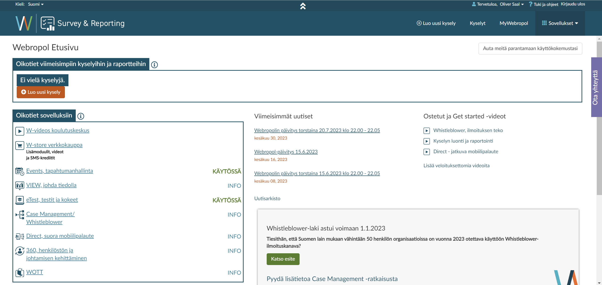
Valitse “Luo uusi kysely” yläpalkista tai oikotiealueen oranssista napista luodaksesi uuden kyselyn. Siirryt kyselyn luontilomakkeeseen (Kuva 3.2).
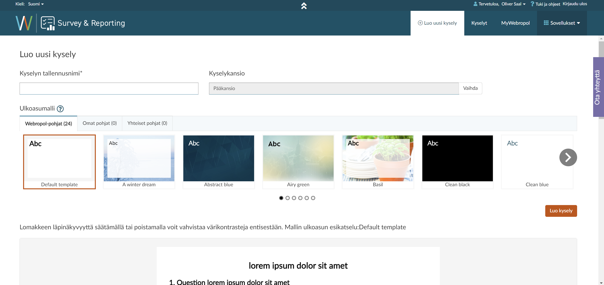
Voit nimetä kyselysi sekä valita, mihin kansioon haluat laittaa sen. Tämä vaikuttaa vain siihen, miten järjestelet omat kyselysi tililläsi, eikä näy vastaajille.
Tällä alueella voit myös määritellä ulkonäkömallin. Myöhemmin voit vapaasti muuttaa ulkonäköä, mutta valitse jo tässä hetkessä malli, joka on tarpeeksi lähellä lopullista versiotasi. Näet esikatselun kyselyn ulkonäöstä tietokoneruudulla sivun alaosassa.
Kun olet nimennyt kyselyn ja valinnut mallin (voit käyttää oletusasetusta), paina “Luo kysely”-painiketta sivun oikealla puolella. Siirryt silloin kyselyn muokkausnäkymään (Kuva 3.3).
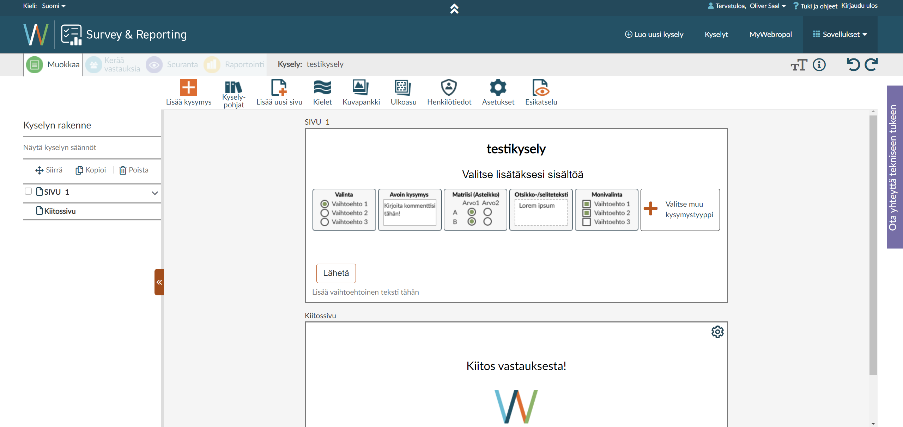
Webropolin kyselyillä on neljä näkymää, jotka löydät sivun ylävasemmalta: Muokkaa, Kerää vastauksia, Seuranta ja Raportointi. Nimensä mukaisesti muokkaat kyselyä Muokkaa-näkymässä, määrittelet keräystavat Kerää vastauksia -näkymässä, seuraat vastaamisprosessia Seuranta-näkymässä ja tarkastelet vastauksia sekä tallennat ne tietokoneellesi Raportointi-näkymässä.
3.3 Muokkaa-näkymä
Muokkaa-näkymässä muokkaat ja laadit kyselylomakkeesi (Kuva 3.3). Sivun vasemmalla puolella näet luettelon kyselyn sivuista. Voit (ja onkin suotavaa) jaata kyselysi useammalle sivulle, jotta vastaajien ei tarvitse rullata suurta sivua ylös ja alas.
Sivun yläkohdassa, näkymien valikon alla, löytyy muokkaustyökalut (Kuva 3.4). Käymme läpi kaikki työkalut, aloittaen ensin kyselypohjista.
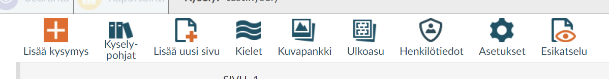
Kyselypohjat-painikkeesta voit tallentaa kysymyksiä valmiiseen kirjastoon, jos käytät niitä usein. Voit myös hakea kirjastosta valmiita kysymyksiä. Tämä on hyödyllinen jos tuotat saman kyselyn monesti, tai jos uudelleenhyödynnät kysymyksiä kyselystä toiseen.
Lisää uusi sivu -painikkeella voit lisätä sivun. Voit tehdä tämän vasta, kun ensimmäisellä sivulla on jotain sisältöä.
Kielet-painikkeella voit määritellä kyselyn kielen sekä lisätä muita kielivaihtoehtoja. Jokaiselle kielivaihtoehdolle joudut itse kääntämään kaikki vastaukset, mutta Webropol yhdistää sitten tiedot yhdeksi datatiedostoksi myöhemmin, joten et joudu tekemään erillisiä kyselyjä useammalle kielelle. Kääntäminen kannattaa tehdä vasta, kun olet tehnyt ensimmäisen version valmiiksi, koska Webropol tuottaa Excel-tiedoston, johon käännökset tulee laittaa.
Kuvapankki-painikkeesta voit lisätä valmiita kuvia kyselyysi Pelastusopiston kuvapankista. Muista huomioida tekijänoikeudet!
Ulkoasu-painikkeella voit muuttaa kyselyn ulkonäköä. Voit muuttaa käytännössä minkä tahansa elementin muotoilua ja värejä, lisätä taustoja tai logoja, muuttaa fontteja, ja niin eteenpäin. Voit myös luoda ja hakea valmiita ulkoasupohjia. Jos teet useasti kyselyjä samalle organisaatiolle, ulkoasupohjan luominen onkin suotavaa nopeuttaakseen työtä.
Henkilötiedot-painikkeella voit määritellä, mitkä kyselyn alueet keräävät henkilötietoja. Tämä auttaa yleisen tietosuoja-asetuksen noudattamisessa. Voit myös automatisoida henkilötietojen poiston - erittäin suositeltavaa, varsinkin jos keräät suoria henkilötietoja tai tietoja erityisistä henkilöryhmistä. Muista määritellä henkilötietojen käsittely tutkimussuunnitelmassasi, mahdollisessa tietojenkäsittelysuunnitelmassasi sekä loppuraportissasi!
Asetukset-painikkeesta löytyy erinäisiä asetuksia kyselylomakkeelle. Täältä voit esim. määritellä, viedäänkö vastaaja kiitossivun jälkeen automaattisesti toiselle sivulle (esim. arvontalomake, tutkimuksen kotisivu), asettaa kyselyn pakolliset vastaukset, rajata anonymiteettiä ja satunnaisjärjestää kysymyksiä tai vastausvaihtoehtoja.
Esikatselu-painikkeesta avautuu uusi välilehti, jossa voit esikatsella kyselyäsi eri laitteilla. Voit myös ladata kyselysi PDF- tai Word-tiedostona tietokoneellesi.
Lisää kysymys -painikkeesta avautuu pieni alue, josta voit valita, millaisen kysymyksen haluat lisätä kyselyysi (Kuva 3.5).
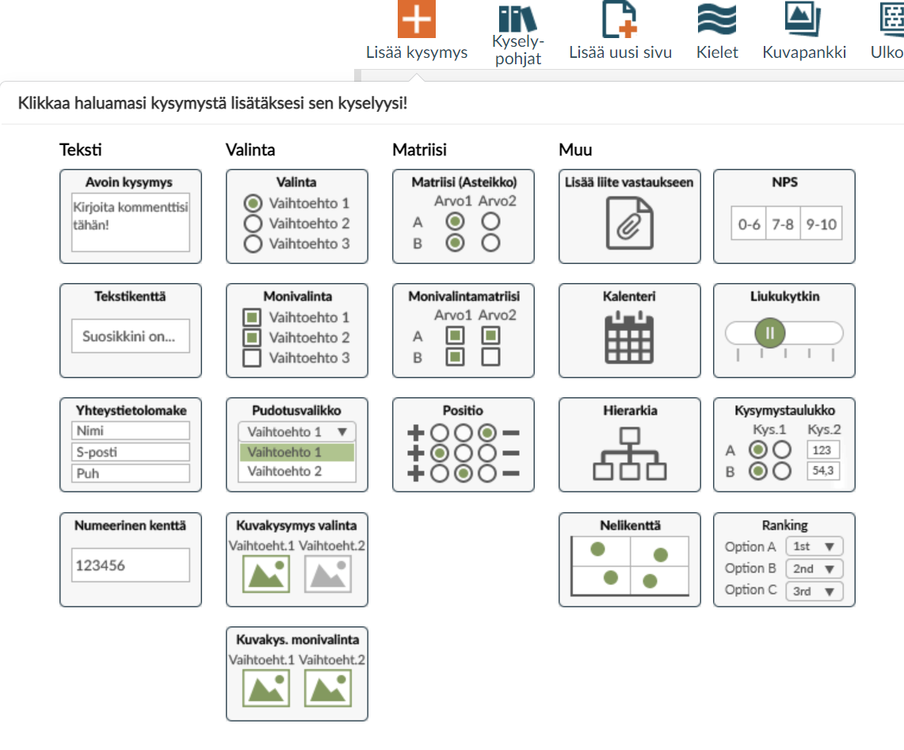
Kysymysvaihtoehtoja on monia, ja suosittelenkin niiden kokeilua ja ihmettelyä omalla ajalla. Tärkeimmät ovat ehkä avoin kysymys ja tekstikenttä, numeerinen kenttä (esim. puhelinnumeron, vuositulojen tai postinumeron keräämiseksi), valinta ja monivalinta sekä matriisi. Voit myös pyytää vastaajia jättämään liitteitä, valitsemaan eri kuvista, laittamaan asioita numerojärjestykseen, ja paljon muuta.
3.4 Kysymysten muokkaus
Valitsin “Valinta”-kysymyksen, mikä lisäsi kysymyksen suoraan kyselyn ensimmäiselle sivulle (Kuva 3.6).
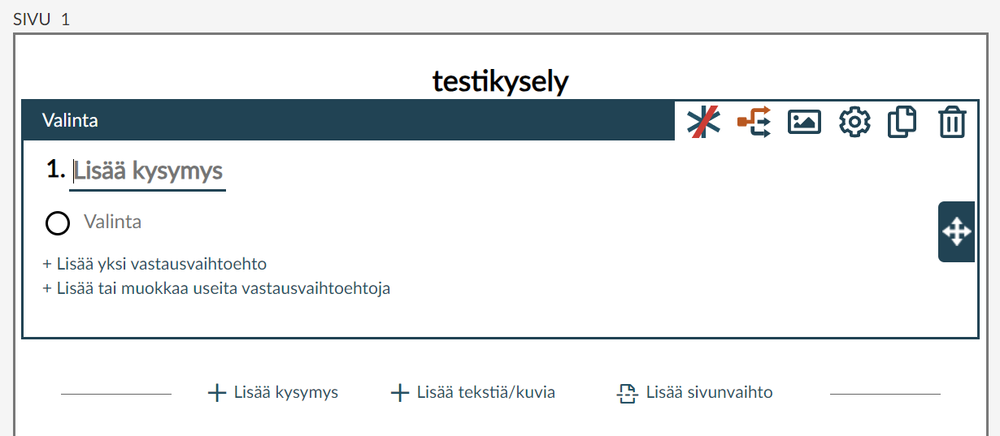
Voit nyt kirjoittaa kysymyksen “Lisää kysymys” -kenttään. Lisää vastausvaihtoehtoja painamalla “Lisää yksi vastausvaihtoehto”, tai jos sinulla on valmiiksi useita, “Lisää tai muokkaa useita vastausvaihtoehtoja”. Voit kirjoittaa vastausvaihtoehdot suoraan kyselyyn.
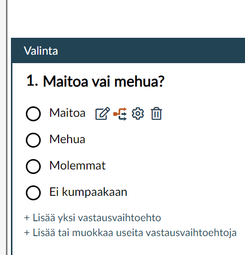
Voit myös tehdä erityisiä muokkauksia vastausvaihtoehdoille siirtämällä hiiren vastausvaihtoehdon päälle (Kuva 3.7). Toinen ikoni oikealta, jossa on useampi nuoli, määrittelee hypyn kyselyssä. Voit tehdä hyppyjä, kunhan sinulla on kysymys, josta hypätään, sekä kysymys, johon hypätään. Voit myös asettaa vastausvaihtoehtojen asetuksia kolmannesta ikonista, esim. mikä vaihtoehto on esivalittuna tai jos haluat satunnaisjärjestää vastausvaihtoehdot.
Jokaisen kysymyksen alla voit helposti lisätä kysymyksiä, kuvailevaa tekstiä tai kuvia, sekä sivunvaihtoja painikkeista (Kuva 3.6). Kokeile lisätä omia kysymyksiä, määritellä hyppyjä, sekä tehdä satunnaisjärjestämistä kysymyspatteristoille!
3.5 Kerää vastauksia -näkymä
Ennen kun olet valmis keräämään vastauksia populaatioltasi, muista tarkistaa ainakin:
- Henkilötietoasetukset
- Saatekirje (muista oikeus julkaista dataa!)
- Loppusanat
- Kysymysten muotoilu, oikeinkirjoitus
- Hyppyjen toiminnallisuus (kokeille niitä esikatselulla)
Sivun ylävasemmalta voit siirtyä Kerää vastauksia -näkymään (Kuva 3.8 (a)).
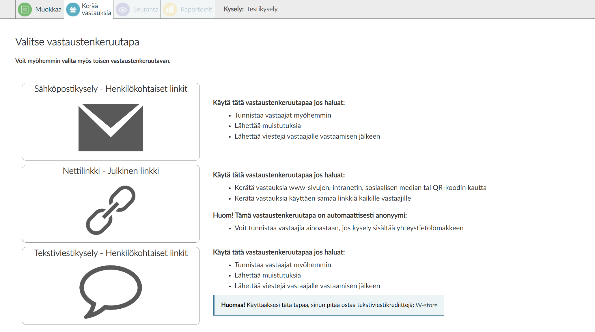
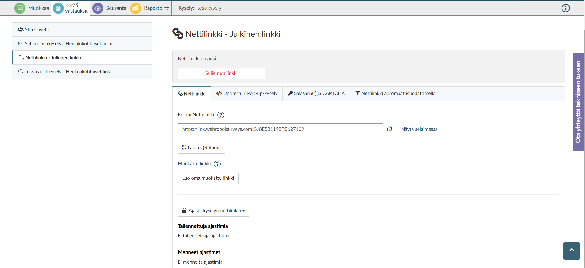
Voit kerätä vastauksia kolmella eri tavalla: henkilökohtaisilla sähköpostilinkeillä tai tekstiviestilinkeillä, sekä julkisella nettilinkillä. Jos tarvitset henkilökohtaiset linkit jostain syystä, käytä sähköposti- tai tekstiviestitoimintoa. Yleensä kuitenkin helpointa on lähettää linkki kyselyyn eri kanavien kautta, joten näytän tässä sen toiminnon.
Jos painat “Nettilinkki - Julkinen linkki” -painiketta, voit avata uuden nettilinkin. Huomaathan, että avaamisen jälkeen et enää voi muokata kysymyksiä! Kun olet hyväksynyt tämän tosiasian, pääset nettilinkin muokkausnäkymään (Kuva 3.8 (b)). Tästä löydät kyselyn julkisen linkin, ja voit laatia QR-koodin sille jos haluat. Voit myös ajastaa linkin toiminnan. Toinen hyödyllinen ominaisuus on salasanasuojaus sekä CAPTCHA-robottitunnistus, jolla voit rajata kyselyn vastaamista sekä vaatia käyttäjän tekemään CAPTCHA-kokeen vähentääksesi robottivastauksia (jos niitä esiintyy). Voit jopa määritellä kysymyksen, jonka pohjalta vastaajan tulee antaa tietty salasana päästäkseen eteenpäin kyselyssä - hyödyllistä, jos esim. haluat varmistaa että tietyt ryhmät pääsevät vastaamaan vain heille suunnattuihin kysymyksiin tai että ryhmät erotellaan automaattisesti heti kyselyn alussa.
Kun olet määritellyt linkin toiminnan valmiiksi, voit lähettää linkin eteenpäin vastaajillesi. Näin kyselysi on auki!
3.6 Seuranta-näkymä
Kyselyn avattua sinua voi kiinnostaa, kuinka moni vastaa tai jättää vastaamatta. Voit nähdä nämä tilastot Seuranta-näkymästä (Kuva 3.9).
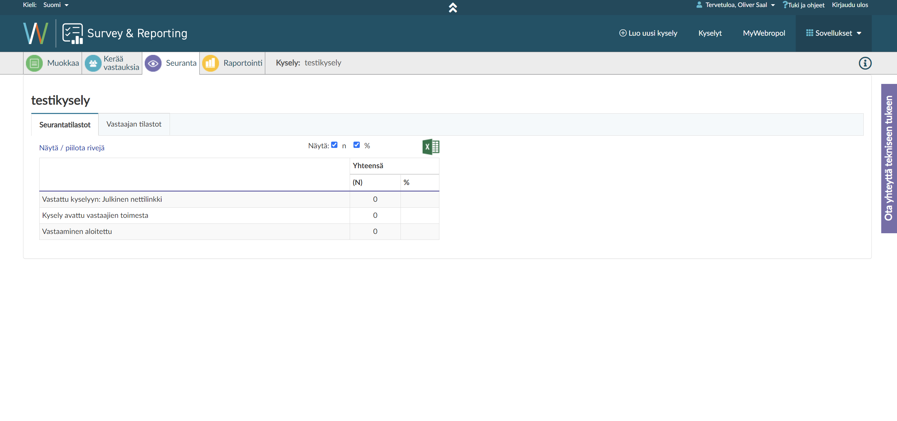
Tästä voit näkeä vastauskadon määrässä ja prosenteissa: kuinka moni vastaajista on avannut kyselyn, mutta sulki sen heti? Voit myös nähdä määrän vastaajia, jotka aloittivat vastaamisen, mutta eivät välttämättä suorittaneet sitä loppuun. Vastaajan tilastot -välilehdeltä voit myös tarkistaa kuinka kauan vastaamisessa kestää. Tämä on hyödyllinen varsinkin jatkokehitystä varten, koska saat suoran käsityksen kyselyn ajallisesta pituudesta.
3.7 Raportointi-näkymä
Jossain vaiheessa haluat varmaankin myös nähdä kyselyn tulokset. Nämä löytyvät Raportointi-näkymästä (Kuva 3.10).
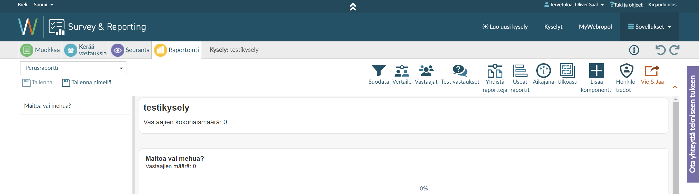
Näkymä näyttää sinulle jokaisen kysymyksen vastausjakaumat numeroissa sekä käyrinä. Näistä voit saada nopean käsityksen kyselysi vastauksista, mutta älä käytä näitä suoraan raportissasi!
Raportointityökalut löytyvät yläoikealta, ja niitä on moneksi. Tärkein kuitenkin on Vie & Jaa -painike, josta saat asetukset tulosten tallentamiseksi tietokoneellesi ().
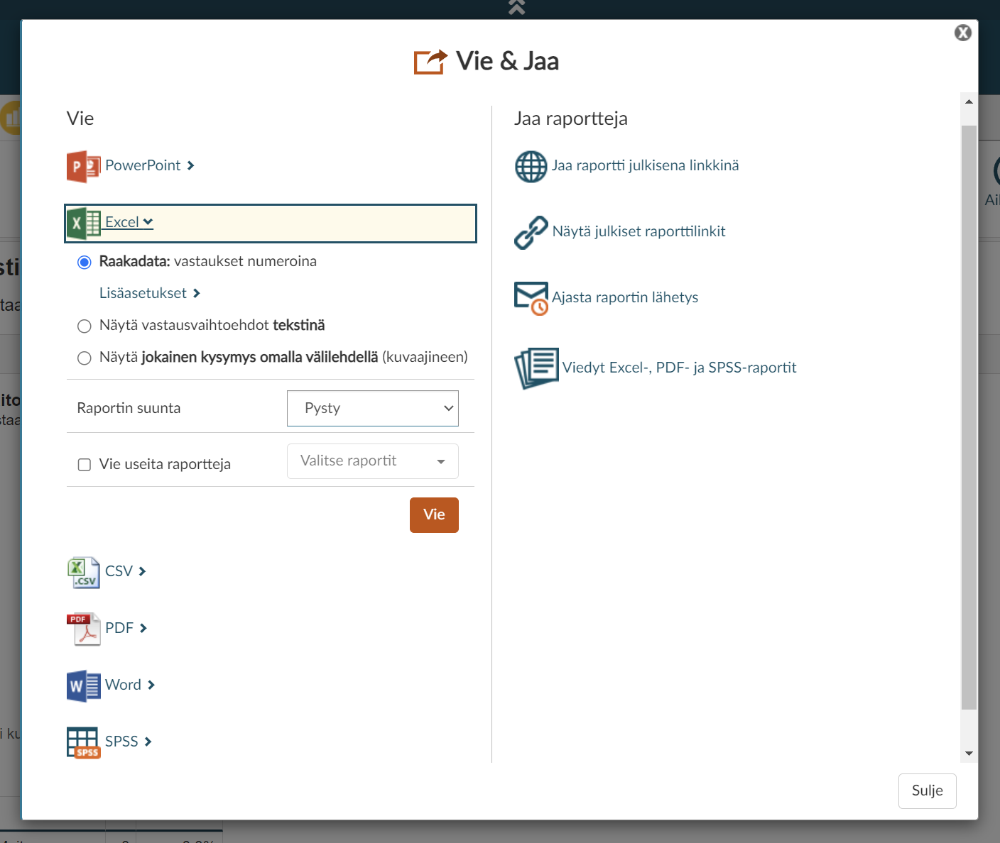
Voit viedä raportointinäkymän tulokset suoraan PowerPoint-esitykseen, jos haluat nopeasti saada tulokset ulos ilman kummempia raportointeja. Jatkokäsittelyä varten voit tallentaa tulokset Excel-, CSV- sekä SPSS-muotoihin. Voit myös tallentaa tulokset sellaisenaan PDF- tai Word-tiedostoihin.
Voit myös jakaa Webropolin tekemän raportin oikean puolen painikkeista, esim. vastaajille tai yhteistyökumppaneille. Muista kuitenkin, että raportissa voi olla arkaluontoisia tietoja, joten tarkista aina kaikki tiedot ennen kuin jaat niitä muille! Muista myös, että sinulla tulee olla lupa jaata tietoja eteenpäin kyseisille tahoille vastaajilta - muistithan kysyä lupaa saatekirjeessä…?